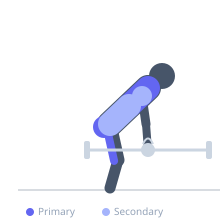
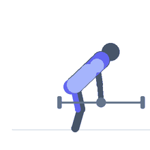

Exercise guide / Kettlebell Clean
Kettlebell Clean
The kettlebell clean is a single-arm ballistic exercise in which the kettlebell is swung from between the legs to a racked position at the shoulder using a hip hinge and arm pull. Unlike a barbell clean, the kettlebell is guided into the rack by the forearm rather than caught with the hands, requiring specific wrist positioning and elbow control. It trains hip hinge power transfer, shoulder girdle stability in the racked position, and the coordination of the lower and upper body in force transmission.
Primary muscles
gluteus maximus
biceps femoris long head
latissimus dorsi
Secondary muscles
trapezius upper
deltoid anterior
erector spinae
Stabilizers
transverse abdominis
infraspinatus
Equipment
Kettlebell


Starting position
- Stand with feet shoulder-width apart. Kettlebell on the floor between the feet, hinged forward to grip with one hand.
Setup
- Choose a weight manageable for clean technique — wrist bruising usually means the bell is swinging out too wide before the catch.
Steps
- Step 1: Hinge at the hip to grip the kettlebell. Hike it back between the legs like a hike pass in American football.
- Step 2: Explosively extend the hips and drive the kettlebell upward, pulling the elbow high as the bell rises.
- Step 3: As the bell rises to shoulder height, rotate the hand and guide the bell into the racked position — bell resting on the forearm at the shoulder.
- Step 4: Stand tall in the racked position. The bell should sit quietly without banging the forearm.
- Step 5: Hinge back and let the bell descend in a controlled arc back between the legs for the next rep.
Coaching cues
- Hike hard — drive the hips
- Pull the elbow high and tight
- Guide the bell in — don't let it loop out
Breathing
- Exhale sharply at hip extension. Inhale during the swing back.
Range of motion
- Full hip extension at the top of the drive. Bell fully racked at shoulder.
Tempo
- 5–10 reps per arm per set. Fluid, rhythmic cadence.
Common mistakes
- Letting the bell loop out wide — guide it in a tight arc close to the body
- Catching the bell with a limp wrist — the forearm and wrist must be firm
- Not fully extending the hips at the top of the drive
Safety
- Wrist bruising is a learning artifact of incorrect bell path, not a training adaptation — fix technique.
- Start with lighter weight to learn the racking position.
Training
- strength: 3–6 reps
- endurance: 8–15 reps
- strength: 3–5 sets
- endurance: 3–5 sets
- Rest: {'strength': 120, 'endurance': 60}